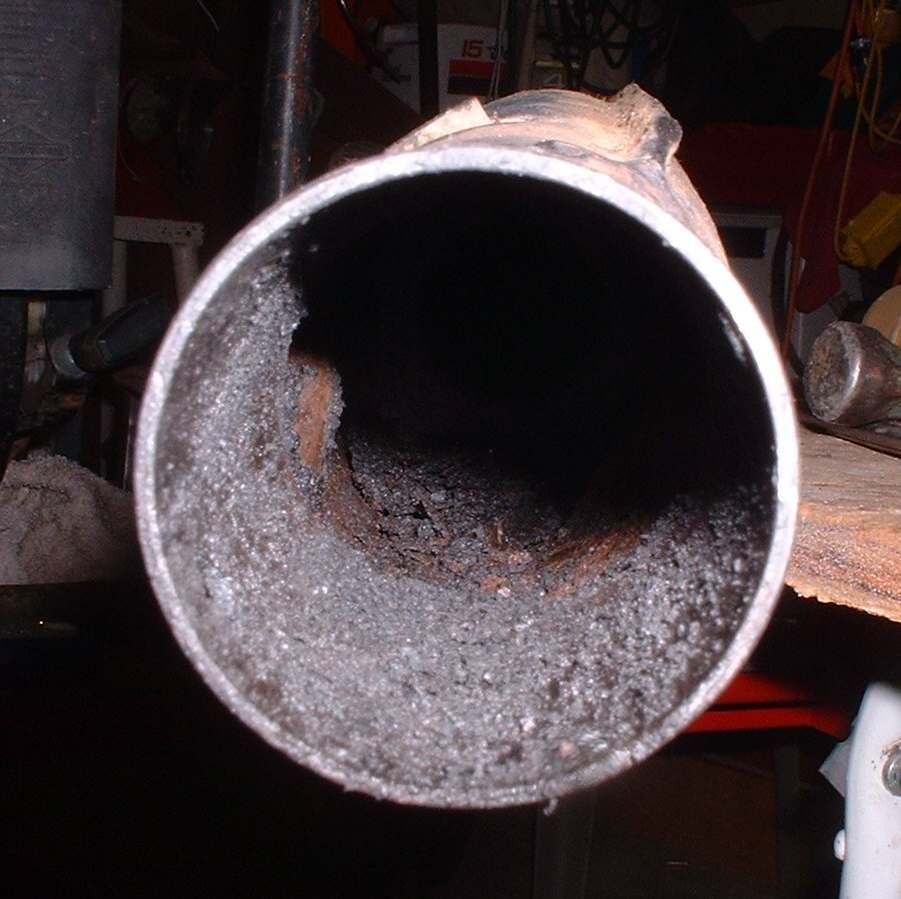

A two-stroke burns oil with its fuel. If more oil goes in than burns, it collects in the exhaust as a black, sticky liquid that drips from joints and the outlet. Common causes are too much oil (wrong premix ratio or oil pump set too rich), a lot of slow riding and idling, a rich carburettor setting, or wrong oil. Less often, a worn crankshaft seal on the gearbox side lets gearbox oil into the crankcase and it is burned. MAVCC lists an oily exhaust pipe as a sign the engine needs more than a tune-up.
Is it safe to ride?
Yes with care. Keep oil off the rear tyre: wipe the silencer and tyre. Fix the cause before long rides.
Quick checks first
- Premix bike: what ratio did you mix? Did you add oil to the tank twice?
- Oil-injection bike: is the oil tank level going down faster than usual?
- Is the gearbox oil level falling?
- Is the bike ridden mostly slowly in traffic?
Diagnose it step by step
1Is the oil coming from a joint (head pipe flange or silencer joint) rather than the outlet?
- Yes: the joint leaks and lets sludge out. Fit a new gasket with Find and fix an exhaust leak. Then continue, because the oil supply may still be too high.
- No: go to step 2.
2Premix bike: is the mix stronger than the ratio in your manual?
- Yes: drain and refill with the correct mix. Never guess the ratio; use the manual or the oil maker's chart for your engine.
- Oil injection: go to step 3.
3Check the oil pump with Check the two-stroke oil pump and lines. Is the pump cable set too far open, or is the bike also premixed by mistake?
- Yes: correct it. Do not premix and inject together unless the manual says so for running-in.
- No: go to step 4.
4Is the gearbox oil level falling with no outside leak?
- Yes: a crankshaft seal may be leaking gearbox oil into the crankcase. Ask a workshop to check crank seals; see Assess the top end (cylinder, piston, valves) for the related strip.
- No: go to step 5.
5Read the plug with Read a spark plug. Is it wet and black?
- Yes: the fuel mixture may also be rich. See Engine runs rich, smells of fuel and smokes black.
- No: carbon and sludge may already be built up. Go to step 6.
6. Workshop: Decarbonise a two-stroke exhaust and port. After cleaning, a correct oil supply and some regular higher-rev riding keep it clean.
Causes, most likely first
| Cause | How to confirm | Fix |
|---|---|---|
| Premix too strong | Mixing record | Drain and mix to the manual ratio |
| Oil pump set too rich | Pump marks, oil use high | Check the two-stroke oil pump and lines |
| Leaking exhaust joint | Drips at joint | Find and fix an exhaust leak |
| Carbon and sludge in exhaust | Low power, crust | Decarbonise a two-stroke exhaust and port |
| Leaking crankshaft seal | Gearbox oil falling | Assess the top end (cylinder, piston, valves) |